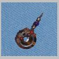

Rocks 'n Rags
Beads, Stones and Wire
The start of my transition from dimensional abstracts in
acrylics and clay to wearable metal and stone.

01
02
03
04
05
Back to
Jewelry and Metal Art Index
Last update: 17 April 2004,
martin@rock-n-rags.com